2026年上半期のイベント一覧（終了済み）
夢織の兎のプレゼント

2026年5月27日メンテナンス後～2026年6月17日23時59分
デイリーログイン
毎日ゲームにログインし、ドリームキャッチャーをタップするとイベントへのログインを完了。
- 【スタンプ】あれ？
- 【アイコン枠】針が紡ぐ夢 など
イベントシナリオ
ストーリーは7日間に分かれており、時間経過と共に開放されます。
- 毎日のストーリー完了 → 「夢織の毛糸玉」10個（合計70個）
- 1日目完了 → 【SSRタグ】朧げな夢
- 全てのストーリー完了 → 【居館音楽】夢織の庭
夢織の兎を追って
夢遊の紳士を操作して夢境の花園を進み、夢織の兎を追いかけてポイントを獲得。「夢境の小箱」がドロップし、開けると：
- 「夢織の毛糸玉」または夢の欠片を1日20個まで獲得
夢綴る言葉
「夢境の小箱」から獲得した夢の欠片を自由に組み合わせ、【SSRタグ】に再記録できます。
※イベント終了後、タグテキストは変更不可
対戦ドロップ
対戦参加で「夢織の毛糸玉」1日50個まで獲得（合計250個）
イベントショップ
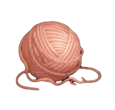
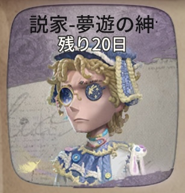
- 以下の豪華ボーナスを交換できます：
- 【SSR衣装】小説家-夢遊の紳士
- 【特殊アクション】破輪-夢を掴む
- 【特殊アクション】小説家-夢を描く
- 【アイコン】夢織の兎
- 【落書き】破輪-休憩
- 【落書き】小説家-閃き など
特殊アクション再登場
- 曲芸師-プレゼントを受け取る
- 画家-プレゼントを受け取る
- 玩具職人-プレゼントを受け取る
販売期間：2026年5月27日メンテナンス後～6月10日23時59分 割引価格：98エコー（エコーでのみ購入可能）
イベントテーマ家具
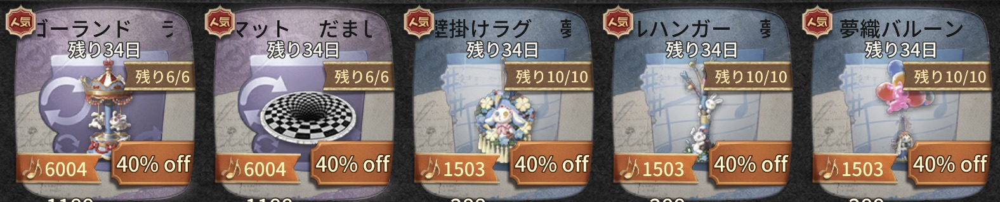
【SSR家具】
- だまし絵マット → 通常1188エコー/4188手掛かり、イベント期間中688エコー（最大6個）
- ラビットゴーランド → 通常1188エコー/4188手掛かり、イベント期間中688エコー（最大6個）
【SR家具】
- 夢織バルーン → 通常288エコー/1088手掛かり、イベント期間中168エコー（最大10個）
- 夢織ポールハンガー → 通常288エコー/1088手掛かり、イベント期間中168エコー（最大10個）
- 夢織の兎壁掛けラグ → 通常288エコー/1088手掛かり、イベント期間中168エコー（最大10個）
販売期間：2026年5月27日メンテナンス後～2026年7月1日23時59分
eスポーツシリーズ販売開始
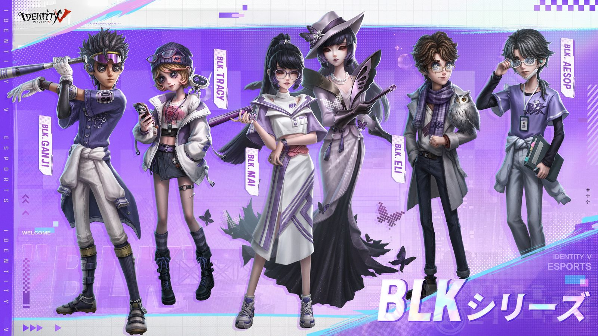
2026年4月30日メンテナンス後～2026年5月27日23時59分
🎮 Game on! We are Team BLK!
バッツマン-eスポーツシリーズ衣装パック
20%オフの割引価格でショップにて期間限定販売！
- 通常価格：3276エコー
- 割引価格：2618エコー
パック内容：
- 【SSR衣装】バッツマン-BLK.GANJI
- 【UR携帯品】バッツマン-飛躍
個別販売：
- 【SSR衣装】バッツマン-BLK.GANJI → 1388エコー
- 【UR携帯品】バッツマン-飛躍 → 1888エコー
芸者-eスポーツシリーズ衣装パック
20%オフの割引価格でショップにて期間限定販売！
- 通常価格：3276エコー
- 割引価格：2618エコー
パック内容：
- 【SSR衣装】芸者-BLK.MAI
- 【UR携帯品】芸者-変遷
個別販売：
- 【SSR衣装】芸者-BLK.MAI → 1388エコー
- 【UR携帯品】芸者-変遷 → 1888エコー
その他新衣装
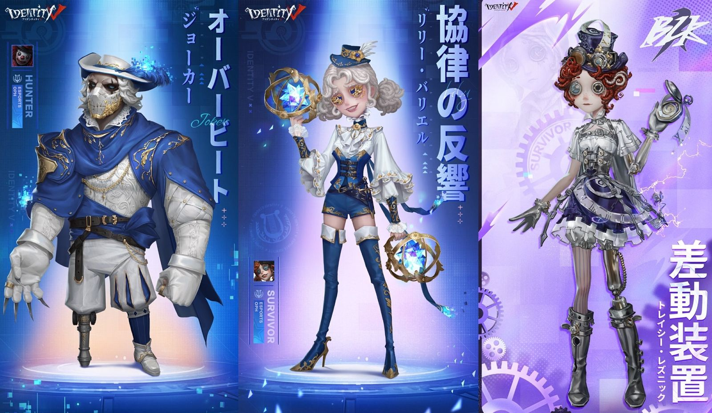
以下の衣装がショップに登場。1388エコーまたは4888欠片でご購入いただけます。
- 【SSR衣装】道化師-オーバービート
- 【SSR衣装】応援団-協律の反響
- 【SSR衣装】機械技師-差動装置
同時に、これらの衣装は金リンゴショップにも追加され、63800金リンゴでご購入いただけます。
🔄 eスポーツシリーズ再登場

SSR衣装（1388エコー）
- 道化師-OPH.JOKER
- 応援団-OPH.LILY
- 傭兵-OPH.NAIB
- 骨董商-OPH.QI
- 「囚人」-OPH.LUCA
- 納棺師-BLK.AESOP
- 占い師-BLK.ELI
- 機械技師-BLK.TRACY
SSR衣装（1388エコーまたは4888欠片）
- 骨董商-破裂する音
- 「囚人」-震える時の調べ
- 傭兵-奇怪な弦音
UR携帯品（1888エコー）
- 道化師-躍進の強音
- 応援団-渦動
- 傭兵-転回
- 骨董商-再構築
- 「囚人」-無限
- 納棺師-相転移
- 占い師-共感
- 機械技師-超知能
🎁 限定衣装割引券プレゼント
eスポーツシリーズ再登場期間中、ゲームにログインすると【限定衣装割引券】1枚を獲得できます。
対象衣装（25%オフ）：
- 傭兵-奇怪な弦音
- 「囚人」-震える時の調べ
- 骨董商-破裂する音
- 応援団-協律の反響
- 道化師-オーバービート
- 機械技師-差動装置
リベロの「天外の来客」

2026年4月2日メンテナンス後～2026年4月22日23時59分
📖 イベント概要
「星を祭る者」事件で出会った「レディ・ドーン」について調査するため、Mr.リーズニングはかつての戦友であるロナードに話を聞くことにした。このゴールデンローズ劇場の新たな主人との会話を通じて、Mr.リーズニングはクロートーがすでに劇場を去り、別の劇場で名声を得ていること、さらに港町で開催される飛行大会にゲストとして招かれていることを知る。Mr.リーズニングと共に、リベロの調査へ向かおう！
イベントにはログイン・イベントストーリー・飛行大会ミニゲーム・公共マップなどが含まれます。
🔍 イベントストーリー
Mr.リーズニングと共に事件調査を完了し、ストーリーの調査進捗を進めると、以下の豪華ボーナスを獲得できます。
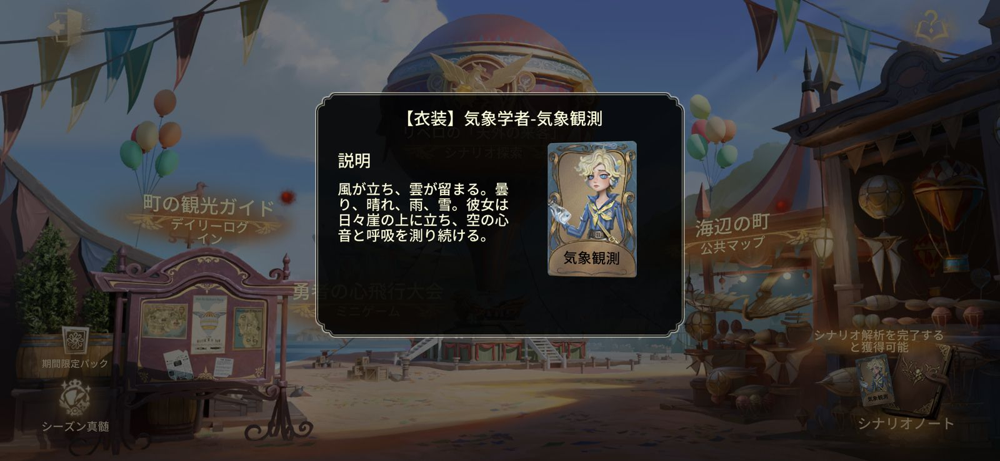
- 【衣装】気象学者-気象観測
- 【携帯品】サバイバー-飛行大冒険
- 待機モーション解放カード
ストーリー開放時間
- 第二章：2026年4月9日メンテナンス後に開放
- 第三章、エピローグ：2026年4月16日メンテナンス後に開放
📅 デイリーログイン
イベントに参加してログインを行うと、以下の豪華ボーナスを獲得できます。
- イベントアイコン
- イベントアイコン枠
- 手掛かり
- 欠片 など
✈️ 飛行大会ミニゲーム
ミニゲームに参加してより遠い飛行距離を目指すと、以下の豪華ボーナスを獲得できます。
- 【SSR家具】海上の城
- SR衣装解放カード
- 特殊アクション解放カード
- キャラ解放カード
- 手掛かり
- 欠片
- スコープ など
🌊 期間限定公共マップ「海辺の町」
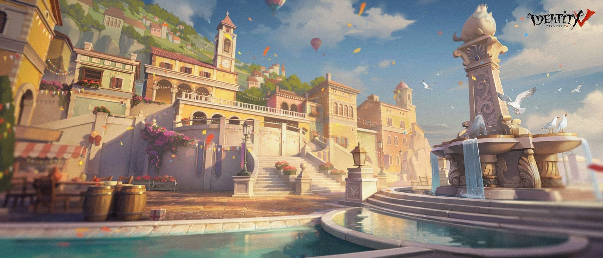
町では盛大な祭りが開かれている。共に海辺の宴へ赴こう！期間限定公共マップ「海辺の町」が開放！
イベントボーナス：
- SSR家具
- 居館音楽
- イベント落書き など
📓 飛行訓練ノート
勇者の心飛行大会がまもなく開始！ノートに記された準備作業をチェックし、各作業タスクを完了しましょう。
ボーナス：
- SSR衣装解放カード
- 動く落書き
- ランク戦保護カード など
タスク解放期間
- 1週目タスク：2026年4月2日メンテナンス後～2026年4月22日23時59分
- 2週目タスク：2026年4月9日0時～2026年4月22日23時59分
エイプリルフールイベント2026
2026年3月26日メンテナンス後～2026年5月6日23時59分
📖 荘園の秘密の儀式
本棚の片隅で古びたノートを発見。不気味で理解しがたい内容に、ゾッとしながらも期待を覚える。この「秘密の儀式」は、荘園の奥に潜む秘密へあなたを導いてくれるだろう……

儀式に必要なタスクを完了すると、以下の豪華ボーナスを獲得できます。
- 【SSR衣装】「アンデッド」-カーニバルタイム
- 【SSR家具】ロケットチェア
- 【アイコン】カーニバル……タイム
- 【スタンプ】お願い
🎭 エイプリルフール期間限定モード
通常の対戦に体型変化・暗号機チェイス・ロケットチェアチェイス・ミミックなどのユニークな要素が加わった期間限定モード。この特別な一日を、いつも以上に楽しみましょう！
👤 サバイバー：体型変化
体型拡大
- 条件：一定時間ハンターを牽制／暗号機を追撃／一定進捗解読
- 効果：板を落とす速度が上昇。板当て・コントロール系スキル使用時、ハンターの気絶時間やコントロール効果の持続時間が延長
- デメリット：板・窓の乗り越え速度が低下
体型縮小
- 条件：攻撃を受ける／道具箱を使う／暗号機の調整失敗
- 効果：板・窓の乗り越え速度が上昇。最小まで縮むと落とされた木の板を直接通り抜け可能
- デメリット：板を落とす速度が低下。板当て時のハンター気絶時間が短縮
🔪 ハンター：体型変化
体型拡大
- 条件：サバイバーに攻撃命中／サバイバーをロケットチェアに拘束
- 効果：攻撃範囲拡大。板の破壊速度上昇。受けるコントロール効果の持続時間が短縮
- デメリット：窓の乗り越え速度が低下
体型縮小
- 条件：一定時間サバイバーに攻撃が命中しない／サバイバーからのコントロール効果が一定時間累積
- 効果：窓の乗り越え速度が上昇。最小まで縮むと落とされた木の板を直接乗り越え可能
- デメリット：攻撃範囲が縮小。板の破壊速度が低下
💻 暗号機チェイス
マップ内の暗号機はチェイス可能。サバイバーが近づくと逃げ出します。サバイバーが暗号機を追いかけている間、暗号機のサイズが大きくなると同時に解読進捗も増加していきます。解読進捗が一定値に達すると、暗号機は逃げなくなります。
🪑 ロケットチェアチェイス
サバイバーがダウンする度、ロケットチェアがチェイス可能な状態になり、サバイバーとハンターのどちらも追いかけることができます。ロケットチェアは、ダウンしたサバイバーに近づくと自動でサバイバーを拾い上げます。
ハンターが「アンデッド」の対戦で、ロケットチェアがダウン状態のサバイバーに近付くと、「アンデッド」の姿になります。同時に、このサバイバーはこのエリアから離れられなくなります。
📦 道具箱ミミック
マップ内にある一部の道具箱はミミックに変化します。ミミックはアイテムを取ろうとするサバイバーに噛みつくので、注意してください！
新春イベント2026
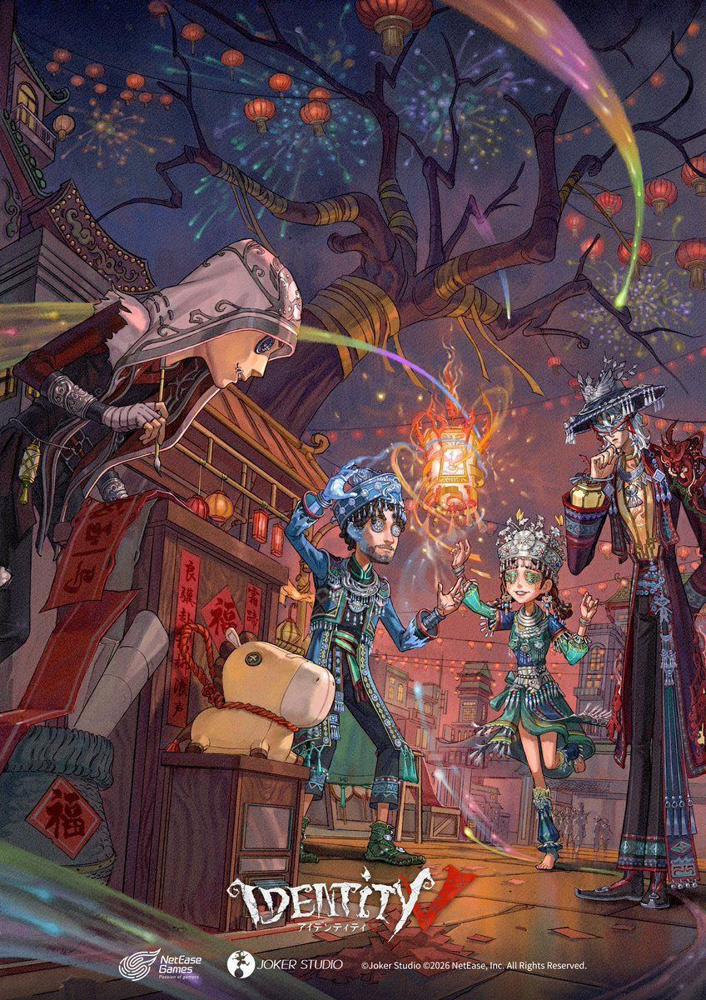
2026年2月12日メンテナンス後～2026年4月2日メンテナンス前
🏮 テーマイベント「千灯が輝き 万家を照らす」
旧正月の灯祭を舞台にしたテーマイベント。参加報酬として共通SSR衣装解放カード・サバイバー共通携帯品-パカラッ・SR衣装傭兵-提灯持ち・特殊アクションなどを獲得できます。
一、灯祭準備
灯祭会場のレイアウトをデザインし、初めてシェアすると【スタンプ】新年の挨拶を獲得。
二、福暦ログイン
2月12日～3月4日23時59分毎日ログインして新年カレンダーに落書きを描くとログイン完了。
三、賞灯逸話
8日間にわたるストーリー。1日分の進度を完了するごとに「灯祭の軽食」×20を獲得。
四、切り絵灯制作
6面の切り絵灯をカスタマイズして「チャイナタウン千灯閣」に展示できます。完成した作品は居館家具として設置可能。毎日初回制作で「灯祭の軽食」×10を獲得。
五、イベントショップ
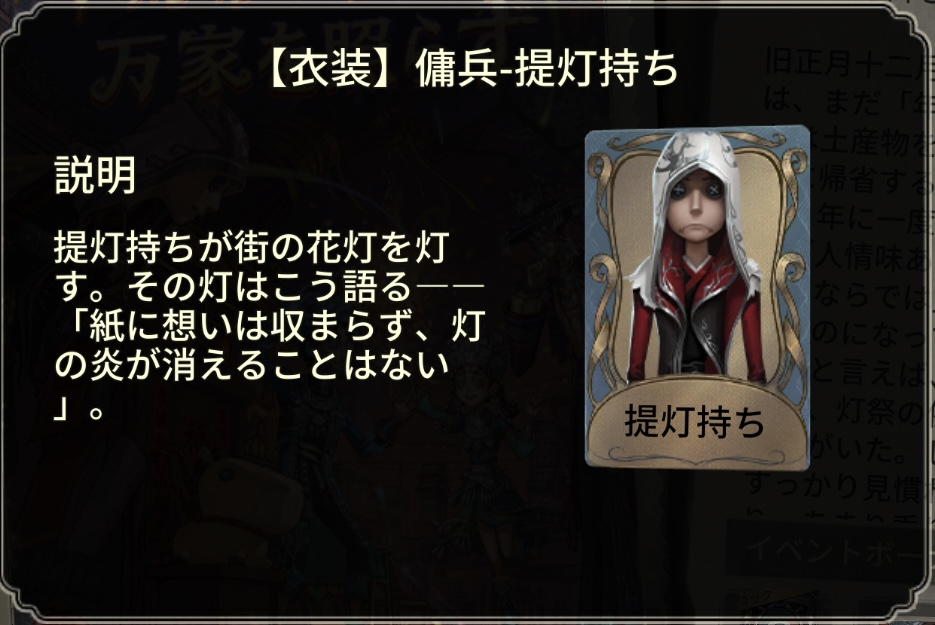
2月16日0時～3月4日23時59分対戦参加で「灯祭の軽食」を1日最大20個獲得。期間限定ショップで共通SSR衣装解放カード・パカラッ・SR衣装傭兵-提灯持ちなどと交換できます。イベント終了後、未使用分は1:2で手掛かりに変換されます。
六、灯謎の趣
任務達成でなぞなぞランタンを解き明かし【アイコン】上元節を迎えるなどを入手。全タスク完了で【特殊アクション】泣き虫-飴細工を獲得。
期間限定公共マップ「華灯の新年」
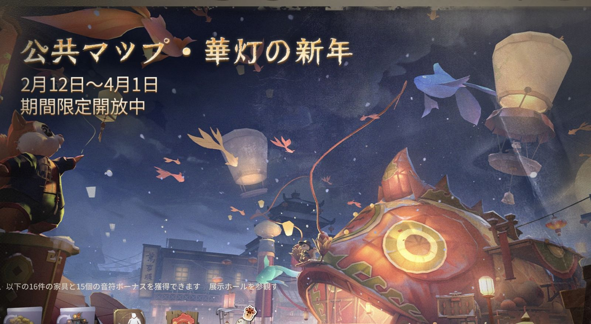
2月12日メンテナンス後～4月2日メンテナンス前／24時間開放花火ショーは2月15日～23日、毎晩19時～24時（1時間ごとに1回・各15分）に開催。
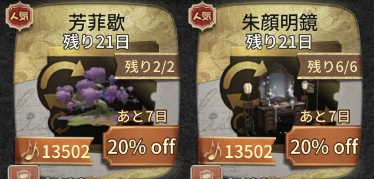
イベントボーナス：
- 写真撮影タスク完了 → 【特殊アクション】ハンター-花灯
- 幸運元宝収集 → 【SSR家具】金雪迎春・灯影の新年と交換可（交換期間：2月17日0時～4月2日メンテナンス前）
- その他タスク → 【落書き】大漁に恵まれますように・友情ポイント・欠片など
娯楽モード（2月15日～23日 毎晩19時～24時）
- 新春灯祭：お年玉の使者への挨拶で幸運元宝を獲得。フロート車のパレードにも参加できます。
- 元宝お年玉：3分ごとに30個出現。異なる数の金の元宝を獲得。
- 福縁お年玉：自分でお年玉を投入し他プレイヤーにシェア可能。3分ごとに30個出現。
- 盛運お年玉：一定確率で手掛かり・欠片・体験カード・永久衣装などを獲得。2月15日～18日の毎晩20時・20時15分と2月17日0時・0時15分、合計10回開催（1回3個）。
- 花灯集会：ショップで5種の手作り花灯をランダム購入。2月15日～23日の夜は提灯持ちから残り4種も購入可。
- 一緒に爆竹作り：協力して最長の爆竹を作成。失敗するとリセット！
- 大食い王チャレンジ：懸鑑楼オーナーに話しかけると餃子大食いに挑戦できます。
- その他サプライズ：新年の礼砲・彩りの壁・ダウトカード・新春の祈りなど期間限定コンテンツが再登場。
春節期間限定モード
通常の1V4対戦に龍舞・爆竹・春聯の3スキルを追加した期間限定モードです。
龍舞（サバイバー限定）
スキルを使うと「龍首」として前方にダッシュし、仲間と連結して龍を形成できます。連結人数が増えるほど移動速度・操作速度・ダッシュ距離が上昇。「龍身」プレイヤーは「尾を振る」でハンターをノックバック・気絶させることも可能。ダウンや一部のコントロール効果で即座に連結解除されます。
爆竹（ハンター限定）
指定位置に爆竹を投げて範囲内の全キャラを爆散させます。長押しで爆発範囲と威力を3段階まで増加可能。爆竹の爆発は龍舞の連結を解除します。なお、サバイバーがいるロケットチェア付近では使用不可。
春聯
ゲーム開始時に1枚獲得。マップの「門」に貼ることで効果を発動できます。
サバイバー春聯：
- 納吉辟邪：ハンターが通過すると逆方向に弾かれる
- 健康長寿：サバイバーが通過すると5秒間シールド獲得
ハンター春聯：
- 不朽威名：サバイバーが通過すると逆方向に弾かれる
- 送故迎新：裏向きカードのクールタイムがなくなり効果を1回追加獲得
春聯使用後、一定条件（解読完了・救助・チェア拘束など）を満たすと一定確率で再獲得できます。
Call of the Abyss Ⅸ
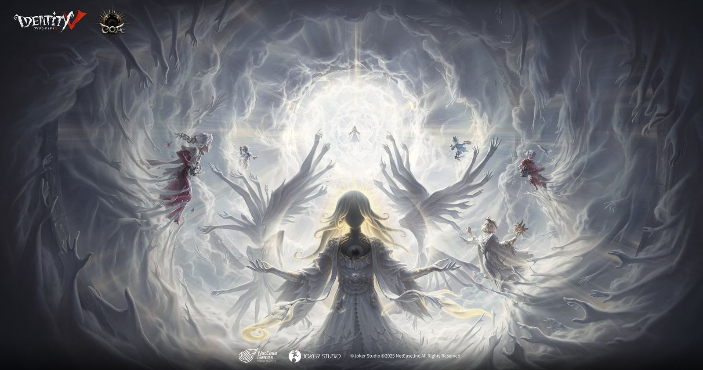
2025年12月31日～2026年1月29日(決勝戦は2026年4月開催)
概要
御客様の皆さん、Call of the Abyss Ⅸ祭典会場へようこそ。今回の祭典は【聖礼の間】、【神遊の祭り】、【光の聖壇】、【終焉の問い】の4つの段階に分けられています。
【聖礼の間】祭典ウォーミングアップ段階
2025年12月31日メンテナンス後～2026年1月8日メンテナンス前この段階では祭典イベントにエントリーすることができます。エントリー期間は2025年12月31日メンテナンス後から2026年1月15日9時までとなります。エントリーに成功した戦隊のメンバーは【神遊の祭り】段階が正式に開始すると参加できます。
【神遊の祭り】祭典予選段階
2026年1月8日メンテナンス後～2026年1月22日メンテナンス前戦隊はこの段階で【神遊の祭り】の対戦に参加することでポイントを獲得でき、ポイントランキングTOP100(一部の地区では50)の戦隊は【光の聖壇】に進出できます。祭典期間中、対戦に参加すると大量の祭典限定ボーナスを獲得できます。ボーナスを獲得できるイベントはCOA決勝戦が5月に終了するまで持続します。
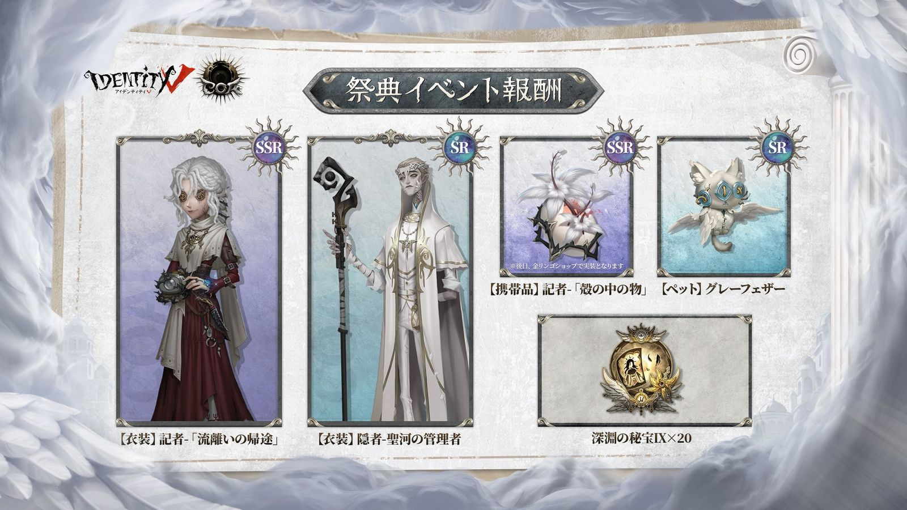
祭典ボーナス：
- 深淵の秘宝Ⅸ×20
- 【SSR衣装】記者-「流離いの帰途」
- 【SR衣装】隠者-聖河の管理者
- 【SRペット】グレーフェザー
- 【料理】サバイバー-ライスプディング
- 【料理】サバイバー-イカスミパスタ
- 【特殊アクション】「騎士」-挑発
- Call of the Abyssテーマアイコン、落書きなど
【光の聖壇】祭典昇段戦段階
2026年1月22日メンテナンス後に開放、1月29日メンテナンス後に集計【神遊の祭り】段階でTOP100(一部の地区では50)に入った戦隊は【光の聖壇】の対戦に参加してポイントを獲得できます。ポイントランキングTOP8(日本地区では6)の戦隊はCOA Ⅸ予選に参加できます。TOP8(日本地区では6)の中にCOA Ⅸ予選/決勝戦に進出した戦隊がいた場合、順位は繰り下げられます。
※欧米サーバーの集計時間はサーバー時間1月29日の夜となります。
【終焉の問い】戦隊順位展示段階
2026年1月29日メンテナンス後に開放【光の聖壇】の各地区のTOP8(日本地区では6)戦隊が後続するCOA Ⅸ予選に招待されます。各地区の予選は2026年2月に順次開放され、決勝戦は2026年4月に開催されます。
祭典が開始しました！さあ、共にこの聖城を探索しましょう！
深淵の秘宝Ⅸが開放！
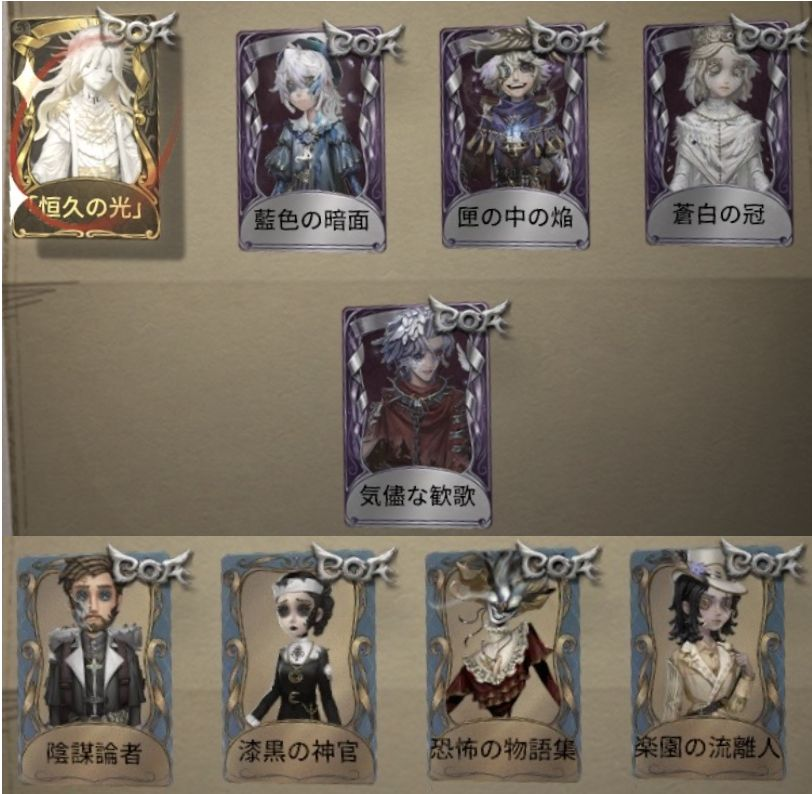
- UR衣装：写真家-「恒久の光」
- SSR衣装：「レディ・ファウロ」-蒼白の冠、画家-藍色の暗面、「騎士」-気儘な歓歌、火災調査員-匣の中の焔
- SR衣装：幻灯師-楽園の流離人、冒険家-陰謀論者、時空の影-恐怖の物語集、空軍-漆黒の神官
深淵の秘宝再登場
Call of the Abyss Ⅸ Global Festivalイベントの開催に向けて、以下の深淵の秘宝が期間限定で再登場します。
- 【深淵の秘宝Ⅲ】
- 【深淵の秘宝Ⅳ】
- 【深淵の秘宝Ⅴ】
- 【深淵の秘宝Ⅵ】
- 【深淵の秘宝Ⅶ】
- 【深淵の秘宝Ⅷ】
eスポーツシリーズ衣装パック
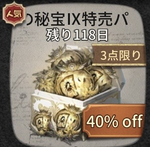
- パック内容：深淵の秘宝Ⅸ×10
- 割引価格576エコーで3回までご購入いただけます。
衣装の残影衣装
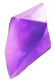

- 上記の衣装が4888欠片で購入可能！
スコープ衣装
- 上記の【SSR衣装】は500スコープで購入可能！
- 上記の【SR衣装】は100スコープで購入可能！
エコーでも交換可能！
- 衣装の残影衣装一覧は1388エコーでも交換可能！
Game on 占い師-eスポーツシリーズ衣装イベント

2026年1月1日～2026年1月28日
概要
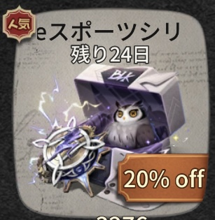
Game on 占い師-eスポーツシリーズ衣装パック
- パック内容：【SSR衣装】占い師-BLK.ELI、【UR携帯品】占い師-共感
- 20%オフの割引価格でショップにて期間限定販売されます。販売価格3276エコー、割引価格2618エコーでご購入いただけます
エコーで交換可能！
- 【SSR衣装】占い師-BLK.ELIが1388エコーで購入可能！
- 【UR携帯品】占い師-共感が1888エコーで購入可能！
みんなのコメント